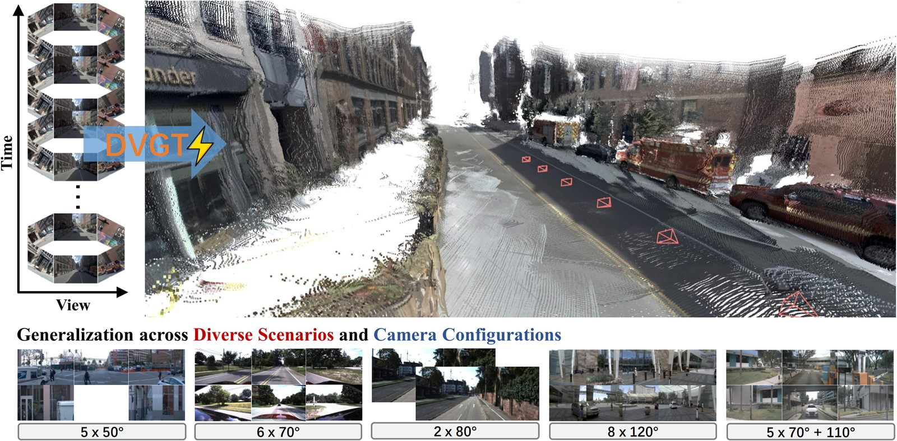

Embodied AI · VLA
基于千寻机器人和 PI0 模型的现实世界桌面物品抓取与放置
完成 VLA 模型在真实物理世界中的端到端部署，构建从数据采集、模型训练到真机验证的闭环，并自主优化 PI0 训练管线以提高桌面抓取与放置任务稳定性。
About
具备从数据采集、模型训练、端侧部署到真实机器人测试的完整实践经验，并熟悉 ROS2、VLA 模型训练、3D 点云重建、端侧推理部署与硬件通信。
本科在读，现任自42班班长
曾任能源45团支书，后转入自动化系学习
Selected Projects

EVGT 项目中的多视角、多帧场景重建示意（此处借用鲁继文老师自动驾驶课题组DVGT工作示意图）
Embodied AI · VLA
完成 VLA 模型在真实物理世界中的端到端部署，构建从数据采集、模型训练到真机验证的闭环，并自主优化 PI0 训练管线以提高桌面抓取与放置任务稳定性。
Edge AI · Robot System
结合昇腾端侧算力与 CyberDog 运动控制，实现多模态交互与智能导览功能，并负责底层运动端口与顶层智能控制逻辑的适配。
3D Perception
在鲁继文老师指导下处理多视角、多帧视觉输入，探索三维视觉与第一视角动态感知在具身智能场景理解中的作用。
Reinforcement Learning
在黄高老师指导下参与强化学习环境中的奖励模型构建，探索具身控制策略优化与仿真评估方法。
Capabilities
VLA 数据采集、模型训练、真机测试全链条经验，能够优化 PI0 模型训练代码与验证流程。
熟悉 agent 系统架构，具备 Habitat3、PARTNR 等具身 agent 环境与数据复现经验。
能够处理多视角、多帧视觉输入，构建 3D 点云并分析第一视角视觉与三维场景理解问题。
熟悉轻量级 Llama 端侧部署、华为昇腾香橙派、CANN 架构、MindSpore 与机器人硬件通信。
具备 ROS2 开发、动捕系统应用、小米 CyberDog 平台自主导航与智能避障经验。
掌握 Python、C#、Unity，熟悉 TightVNC、MobaXterm 等远程开发与调试工具。
Honors
Research Interests
研究如何从人类自然交互的 RGB-D 视觉流中提取技能表征，并映射到底层运动控制，提高机器人从人类行为中自主学习和泛化复杂技能的效率。
关注结合 3D 场景语义、多视角输入、动态视觉与人类动作轨迹的多模态理解模型，使 agent 能够预判人类意图并提供主动式辅助。
探索生成式模型在边缘计算设备上的高效微调与部署，让智能体在隐私保护和低延迟前提下形成个性化辅助策略。
Contact